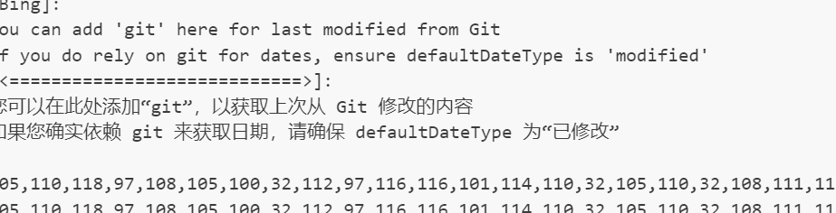

linux基础命令
// 切换到root用户 sudo -i
// 切换到root用户 su
// 切换到root用户 sudo su
图片测试

代码测试
#include <stdio.h>
int main() {
printf("Hello, World!\n");
return 0;
}
链接测试
公式测试
表格测试
| 表头1 | 表头2 |
|---|---|
| 单元格1 | 单元格2 |
| 单元格3 | 单元格4 |
列表测试
- 列表项1
- 列表项2
- 列表项3
引用测试
这是一个引用。
粗体测试
这是粗体文本。
斜体测试
这是斜体文本。
删除线测试
这是删除线文本。
代码块测试
#include <stdio.h>
int main() {
printf("Hello, World!\n");
return 0;
}水平线测试
行内代码测试
这是printf()函数的示例。
脚注测试
这是脚注1的示例。
目录测试
[TOC]
数学公式测试
流程图测试
st=>start: Start:>https://www.google.com
e=>end
op1=>operation: My Operation
sub1=>subroutine: My Subroutine
cond=>condition: Yes
or No?:>https://www.google.com
io=>inputoutput: catch something...
st->op1->cond
cond(yes)->io->e
cond(no)->sub1(right)->op1UML测试
Alice->Bob: Hello Bob, how are you?
Note right of Bob: Bob thinks
Bob-->Alice: I am good thanks!图片测试

Footnotes
-
这是脚注的内容。 ↩